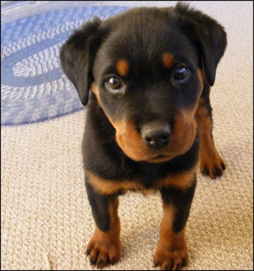
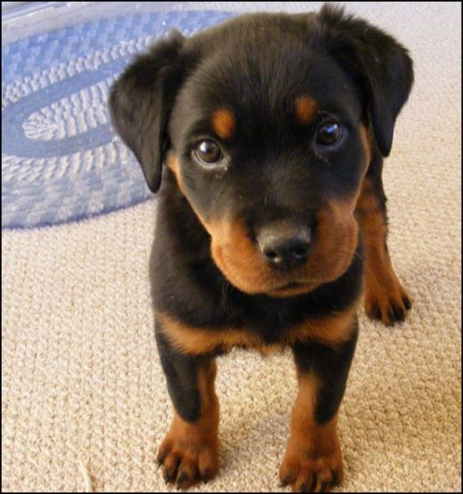
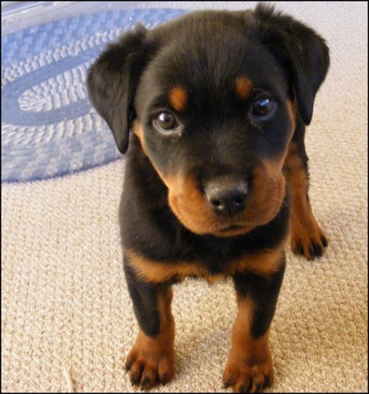

A puppy is a juvenile dog. Some puppies can weigh 1–3 lb (0.45–1.36 kg), while larger ones can weigh up to 15–23 lb (6.8–10.4 kg). All healthy puppies grow quickly after birth. A puppy's coat color may change as the puppy grows older, as is commonly seen in breeds such as the Yorkshire Terrier. In vernacular English, puppy refers specifically to dogs while pup may often be used for other mammals such as seals, giraffes, guinea pigs, or even rats. extracted from Wikipedia
TL:DR - They're adorable! Just look at them...
